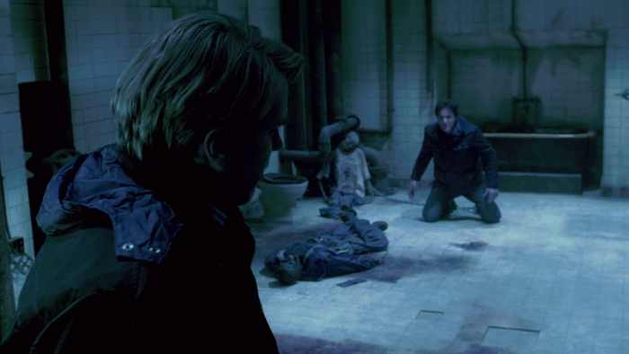

Тони Старк: Без правил, Part I

Жанр: детектив, триллер, трэш, хоррор (16+)
О произведении: Тони Старк, любитель трэша и хоррора, публикует первую часть рассказа Без правил который по сути является сиквелом к серии фильмов "Пила".
Версия:Cut (вырезка из ещё создаваемого произведения)
Скачать (авторская ссылка)
Марк Хоффман лежал в темноте на полу в той позе, в которой его оставил Гордон, и не мог прийти в себя. Вокруг был только холодный сумрак, предметы практически не различались. Голос окончательно сел и он не мог больше вопить, только думать. Мысли сплетались, перебиваясь обидой и гневом, отчаянием и страхом и казалось, что Марк сошел с ума, хотя сидел в ванной комнате прикованный к трубе за ногу не больше суток. Иногда он забывался тревожным сном, который длился не больше часа, и снова начинал думать. Но со временем все сильнее чувствовались голод и жажда, и Марк впал в состояние, близкое к апатии.
Марк Хоффман — в прошлом офицер полиции с прекрасной репутацией, шатен с ярко-голубыми глазами, плотным телосложением. В недавнем прошлом был завербован Пилой, или Конструктором, серийным «убийцей». Конструктор на самом деле предоставлял своим жертвам возможность выбрать: жизнь, или смерть, но людям приходилось чем-то жертвовать, чтобы выбраться из смертельных ловушек. Но если им удавалось выбраться, они начинали по-новому относиться к жизни.
Марк не завел семью, у него была только сестра, которую убил ее дружок, Сет Бакстер, в семейной ссоре. Хоффман в то время занимался расследованием дела Конструктора, и поэтому он решил отомстить Сету, оставив почерк, похожий на почерк Джона Крамера (Пила): он собрал ловушку, которая должна была казнить Бакстера, но не учел одного момента: Пила всегда давал людям шанс на жизнь, а эта ловушка была создана как раз таки для умерщвления Сета, что и произошло, хотя он и выполнил требвания «Пилы». Но самому Конструктору не понравилось, что на него повесили еще одну смерть, и он поймал Хоффмана и заставил его помогать ему в своих преступлениях, угрожая раскрытием дела Сета. Так Марк стал помощником и соучастником Конструктора, а после его смерти и вовсе последователем, так как Джон оставил ему конверты с описанием «игр» и данными людей, которые провинились, или недооценивают жизнь. Марк вынужден был это делать, так как документы о его разоблачении при бездействии Хоффмана всплыли бы немедленно.
Детектив Марк Хоффман попал в этот подвал после того, как он перерезал весь полицейский участок и убил Джилл Так — бывшую жену Пилы, так как она попыталась покончить с ним, надев ему на голову разрыватель челюсти. Марку пришлось сломать себе выпирающую кость на запястье и разорвать шеку, чтобы выбраться из адского механизма. В эту проклятую ванную комнату его затащил доктор Лоуренс Гордон, который также был приспешником Пилы не по своей воле, будучи в долгу перед ним за «спасенную» жизнь(спасать бы его не пришлось, если бы не игра с Пилой). Гордон обязан был расправиться с Марком, если с Джилл что-нибудь произошло бы. И Лоуренс поместил Марка в ту самую комнату, в которой проводилась Его игра: Гордону пришлось отпилить ножовкой себе ногу, убить своего сокамерника, чтобы спасти жену и дочь. Он приковал Марка к трубе и оставил его гнить в подвале вместе с четырьмя трупами.
Каким-то рывком Хоффмана вернуло в реальность и сознание стало совсем ясным, как будто он хорошенько выспался. Марк встал на четвереньки и подполз к высохшему трупу Зеппа и принялся осматриввать содержимое его карманов. Он нашел только бумажник, засунул его себе в карман, ключи(очевидно от квартиры), и давно севший мобильник. В бессилии оттолкнув закостеневшую плоть, Марк подполз к трупу Адама и принялся обшаривать его, но скоро понял, что у того вообще ничего не было. Хоффман ясно осознавал, что просто так ему не отсоединить цепь, и поэтому он стал ощупывать все вокруг себя в поисках предмета, способного сломать кость, которая выпирает и не дает стопе освободиться от оков. Не найдя ничего, кроме ванной и унитаза, Марк перевернулся на живот, подтянул колодку как можно ближе к колену, поднял ногу, и резко опустил ее на край ванной. Боль была сильной, но Марк лишь замычал и опять занес ногу для очередного удара. На этот раз он больше постарался и поэтому в момень удара услышал хруст, и комната наполнилась ужасным криком. Детектив попробовал освободить ногу, но она еще недостаточно изменила свою форму, но жутко болела: в месте перелома уже наливалась гематома, кожа была стесана. От боли глаза Марка застилали слезы, и он не смог больше проделать ни одного удара. Он прекрасно понимал, что если он сейчас остановится, то нога распухнет, и у него тогда вообще никаких шансов на спасение не будет.
Хоффман вдруг посмотрел туда, где находился унитаз. Он осторожно, дабы не причинить ноге боль, подполз к унитазу, отодвигая давно уже мертвого Адама. Марк попробовал пошатать бачок, но ничего не вышло, и он, перевернувшись на спину, стал неистово бить по нему здоровой ногой. Раздался треск и сильный грохот — часть бачка не устояла и рухнула на плиточный пол рядом с Зеппом. Марк подобрал этот увесистый кусок керамического изделия, потом взял свой носок, запихнул его в рот, сел на Адама, вытянул не до конца сломанную ногу перед собой, прицелился, зажмурился, и со всей силы обрушил на нее свое орудие тупой стороной. Марк отчаянно замычал, так как кричать он не мог, занес кусок бачка над ногой еще раз, и нанес такой сильный удар, на который он только был способен. После этого он опрокинулся на спину и заплакал. Он рыдал и рыдал, а боль все не утихала. «-Зачем, Гордон, зачем? Я мог просто уйти, и никто не узнал бы обо всем этом. Но ты пожелал исполнить волю давно уже мертвого Джона, Конструктора...»
Когда Марк смог поднять туловище, голова его сильно кружилась, а под ногой растекалась лужа крови. Нога была фиолетовая, стопа неестественно вывернута, на месте сгиба торчала кость, и из раны сочилась кровь. Марк, поморщившись, попытался снова освободиться от цепи, но понял, что кожа и мышцы на пяточной кости мешают ему. Он уже обезумел от боли и поэтому принялся долбить злосчастным куском сливного бачка по плитке на полу. Он почти сразу же раскололся и Хоффман, схватив его, стал срезать с пятки свою плоть. Марк был весь в холодном поту, мычал от дикой боли, руки были все в крови, но он не останавливался.
С ногой было покончено. Марк, собрав последние усилия, вытянул изуродованную конечность из колодки, при этом выплюнув носок и ванная комната снова наполнилась криком. Хоффман, плача и поскуливая, дрожащими руками переместил ногу и впал в полуобморочное состояние, в котором находился около трех часов.
Это пробуждение было одним из самых поганых из всех. Нога не ощущалась, а во всем организме была такая слабость, что Марк еле смог сесть. Он стянул с себя рубашку и закутал сломанную ногу, при этом отодрав ее от пола с ужасающим криком и убрал остатки ткани с пятки в карман. После этого он пополз в направлении двери. По пути он случайно наткнулся на еще один труп — труп Ксавьера, наркодилера, которого засадил за решетку погибший не без вины самого Марка детектив Эрик Мэтьюз. Марк подполз к слайд-двери и стал сдвигать ее в сторону. Дверь долго не поддавалась, но вскоре отъехала, и Хоффман наполовину выполз из ванной комнаты. Он оказался в коридоре, слабо освещенном голубоватым холодным светом люминисцентных ламп. Стены были оплетены кабелями и паровыми трубами, на полу валялся разнообразный строительный мусор. Марк подтянулся руками чуть вперед и вытащил на свет изувеченную ногу и принялся стаскивать с нее рубашку. Плоть на в месте, где голень переходит в стопу, была сплошным синяком с кровоподтеками, вся нога до колена была перемазана в крови, местами алой, а где-то уже коричневой. Все это венчал открытый перелом. Края раны воспалилсь и вывернулись на изнанку, она все еще слабо сочилась кровью и сукровицей. Марк осторожно в месте колена повернул ногу на бок и осмотрел пятку. Голая кость была абсолютно сухой, это место не болело, лишь отзывалось отвратительным чувством при нажатии, похожим на то, когда отсиживаешь ногу и начинаешь ею двигать. Хоффман запеленал ногу в рубашку снова, на этот раз привязав голеностоп к задней поверхности бедра, чтобы не держать его на весу. Попробовал встать, но безуспешно. «Выходит, придется перемещаться на четвереньках».
Марк знал это здание, так как в нем провелась не одна Игра, поэтому он четко пополз к железной вертикальной лестнице, ведущей из подвальных катакомб. Передвигался он с передышками, так как давно уже ничего не ел и не пил, и нога не позволяла ползти долго, так как постоянно затекала и жутко болела. В какой-то момент Марк просто рухнул на грязный пол и лежал так некоторое время. Сил совершенно не было, особенно после пережитого. Хоффман все-таки сумел доползти до лестницы, но перед тем, как начать подниматься по ней, он снова сделал небольшую передышку. Но у него оставалось все меньше времени, рану нужно было немедленно обработать, иначе заражения крови и последующей ампутации не избежать. Марк на руках стал подтягиваться по перекладинам до того момента, пока не вытянулся в полный рост и не смог поставить здоровую ногу на нижнюю ступень. Так он постепенно, сначала подтягиваясь на руках, потом поднимаясь на здоровой ноге, поднялся на первый этаж здания и обессиленно растянулся на полу. Здание было заброшенным, поэтому Марка не могли здесь обнаружить.
Вскоре Марк немного пришел в себя и огляделся. Он находился в старой комнате с затхлым воздухом. Обои были местами ободраны, мебели практически не было: только старый облезший тяжеленный стол и шкаф с оторванными дверцами. Хоффман пополз к стене, где увидел жердь примерно ему по грудь, и поднялся по ней, как по шесту, уперев ее в пол. Теперь у него было что-то наподобие костыля, и он мог передвигаться в вертикальном положении, но когда он принял его, голова Марка закружилась сильнейшим образом, но он сумел овладеть собой и продолжил движение. Осторожно, не подвергая сломанную ногу большим вибрациям, он стал прыжками двигаться в направлении выхода, который находился совсем рядом. Глаза его еще не привыкли к обилию света: полоски солнечных лучей, пробивающиеся сквозь жалюзи в единственном окне, говорили о том, что на улице день. Когда он добрался до двери, он заметил справа от себя зеркало и уставился в него. Оттуда на Хоффмана смотрел грязный бомж, весь в крови и в поту, к лицу прилипла пыль, следы от слез ясно обозначились на его щеках белыми полосками. Волосы слиплись в сосульки и теперь одна из прядей была седой, от пережитой боли. «- А может, и хорошо, что я так выгляжу. Если они начали меня искать, то в лица бомжей точно вглядываться не будут.», подумал Марк. Потом осторожно, стараясь не потерять равновесие, стал толкать входную дверь. После того, как дверь ему поддалась, его ослепил яркий солнечный свет, поэтому он простоял на пороге некоторое время, привыкая к освещению. Привыкнув, Хоффман запрыгал вдоль кирпичной стены по направлению к проезжей части, опираясь на костыль и проклиная Гордона. Теперь все, что его интересовало, это месть. Но сначала нужно было подлечить ногу. По пути он просмотрел вчерашнюю газету, которую он нашел в мусорном баке, и, прочитав интересующую его статью, обнаружил, что нападение на полицейский участок связывают с именем Джона Крамера только тем, что там была найдена убитая с помощью его же механизма Джилл Так. « -Выходит, я не оставил своих следов», усмехнулся Марк. «Надеюсь, они даже не подумают на меня.» Немного успокоившись, он принялся ловить такси. Ни один таксист не хотел подвозить Марка, так как тот действительно был похож на бомжа. Поэтому он, вытащив кошелек Зеппа, бросился, что есть сил, к ближайшей желтой машине, и, показав 300 долларов, откинув импровизированный костыль в сторону, взгромоздился на заднее сиденье, аккуратно отвязав голень, и положив ногу рядом, прохрипел водителю: -1410 Avenue, травматология,- и протянул 150 баксов.
- Вторую половину получишь, если подождешь меня и отвезешь на 42nd Street, 19.
Водитель все понял и сразу же рванул с места. Марка всю дорогу тянуло в сон, и он не обращал внимания на прекрасные проплывающие мимо улицы Нью-Йорка.
Но вот они приехали, и Марк, держа сломанную ногу на весу, запрыгал ко входу в серое обшарпанное здание, пошатываясь и стоная. Приемная располагалась прямо после входной двери. Там сидело несколько человек, но, как только Марк показал ногу, никто не осмелился предложить ему встать в очередь. Он допрыгал до кабинета врача и, не стуча, вломился внутрь. Санитар, увидев причину пребывания Марка в травматологии, тут же подхватил его под руки, и усадил на кушетку. Хоффман достал опять кошелек Зеппа и дал врачу и санитару по 100 долларов, тем самым избавив себя от необходимости предоставлять документы и страховку. Мед. Работники все поняли, и санитар принялся за дело. Он разрезал штанину Марка до колена, завернул ее, и подошел к шкафчику с препаратами. Сначала санитар достал гипс, потом перекись, бриллиантовую зелень, и раствор фурацилина, который имеет желто-зеленый оттенок. После этого он принес специальную подставку для ноги, поместил ее туда, при этом Марк цикнул на него и, чуть не забыв, достал то, что осталось от пятки, из кармана. Санитар ошалело посмотрел на него, потом, вспомнив про деньги, отправился промывать кожу с кусочком связок. Судя по всему, Марк успел, и в тканях не произошла интоксикация и они не погибли. Санитар вернулся и сказал: -Видимо, чувствительность восстановить не удастся, но пришить кусок плоти обратно, я думаю, мы сможем. Но сначала придется вправить кость. Это будет больно, поэтому я предлагаю Вам взять в рот этот предмет, а еще возьмитесь за ручки кушетки.- И он протянул Хоффману продолговатую пластмассовую палку. Хоффман последовал совету санитара и зажал палку между зубов, приготовившись к мучениям.
Санитар взял стопу в одну руку, а другую разместил на голени Марка и принялся медленно совершать вращательные движения. Марк замычал и стиснул зубами палку, вцепившись в кресло так, что костяшки его пальцев побелели, но санитар не останавливался. Наконец, промучавшись минут пять, санитар убрал руки от ноги Марка. Тот посмотрел на нее и обнаружил, что кость уже не торчит, но стопа все еще неровная. Санитар сказал: -У Вас там все мелкие кости передроблены, когда все сростется, нога не будет прежней.
-Я знаю, хотя бы так,- пробурчал Марк. Он наблюдал за тем, как санитар разводит гипс, а травматолог звенит ампулами и наполняет шприцы. Закончив, врач подошел к Марку и, обколов обезболивающим место, откуда только что торчала кость, принялся зашивать его, после чего перешел к пятке, пришив сначала связки, а потом и кожу. После, его место занял санитар, который разместил стопу перпендикулярно голени(Марк опять обозленно зашипел), и стал заворачивать ее в мокрую теплую марлевую тряпочку, смоченную в растворе гипса которая должна была вскорости затвердеть.
- Снимите его через три недели, все к тому времени подзаживет, - врач с опаской смотрел на Хоффмана, который пытался встать. Санитар дал ему костыль, который упирался в подмышку и Марк, не попрощавшись и не поблагодарив, захромал прочь.
На выходе его поджидал все тот же водитель, и Марк, сев в машину, повторил адрес своего дома, и задремал на заднем сиденьи, но по прошествии пятнадцати минут был разбужен водителем. Марк сонно взглянул в окно и сердце его провалилось куда-то в район желудка: в кустах около его дома в засаде стояла полицейская машина, а внутри сидел незнакомый еему жирный коп и ел пончики.

![]()